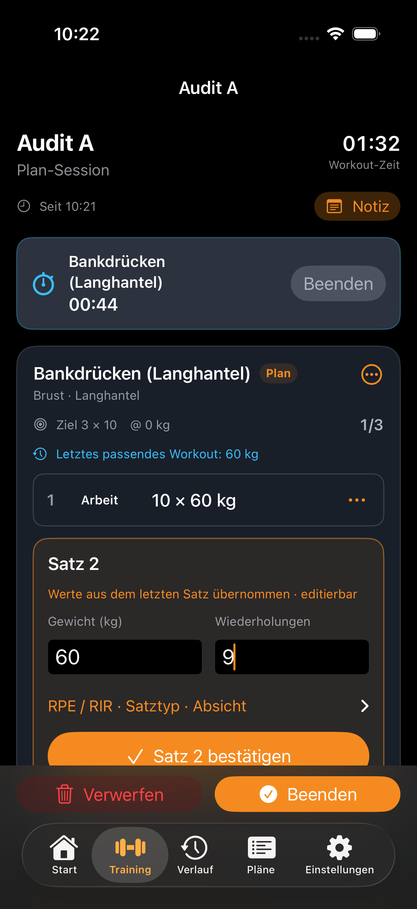
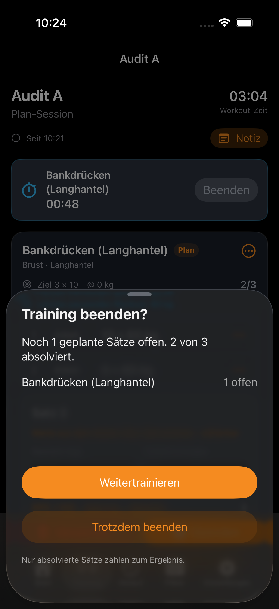
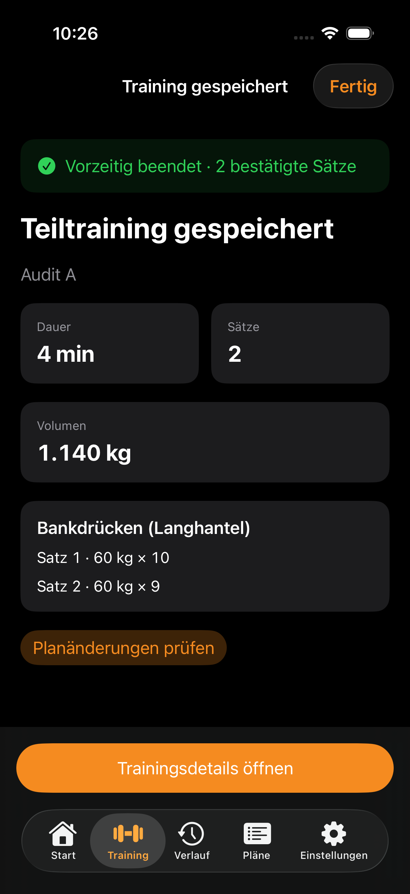
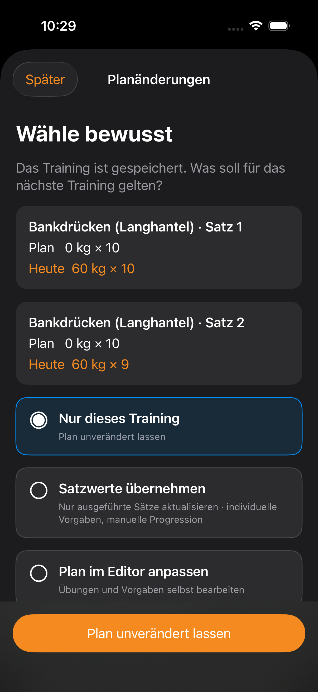
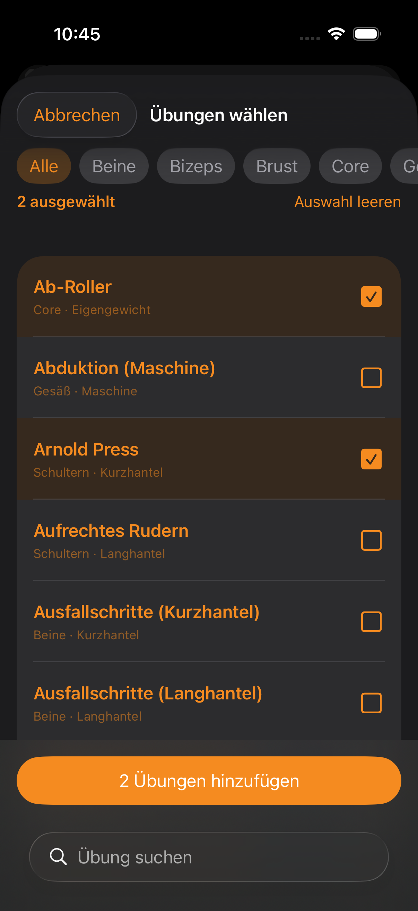
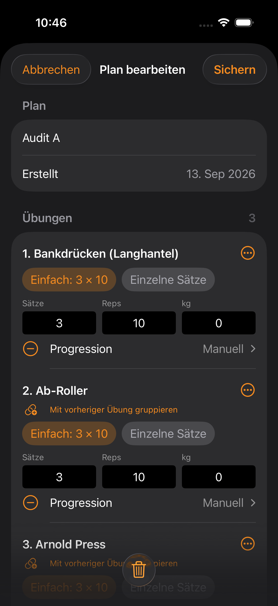
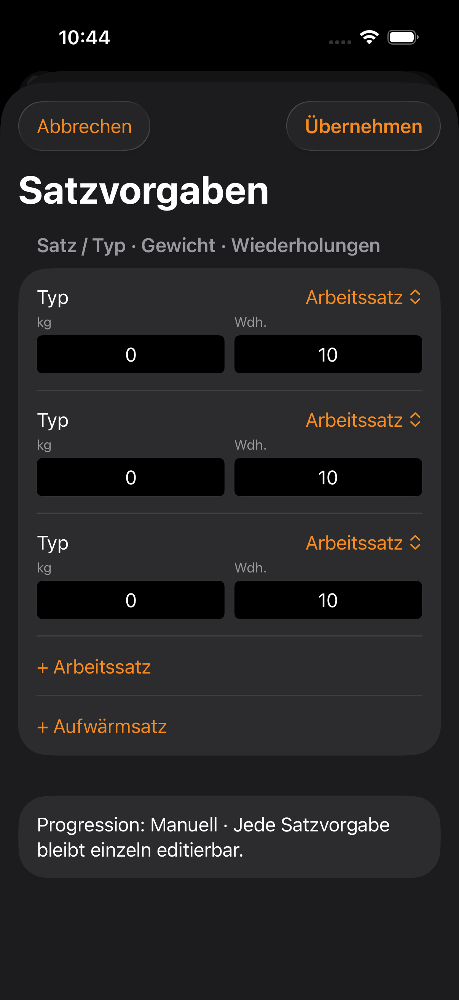

01 · Trainingslogging
Gewicht und Wiederholungen direkt bestätigen.

Bedienprüfung vor letztem Farb-/Textfeinschliff02 · Teiltraining beenden
Offene Vorgaben vor dem Abschluss sehen.

Bedienprüfung vor letztem Farb-/Textfeinschliff03 · Ergebnis
Zwei bestätigte Sätze, 1.140 kg Volumen.

Bedienprüfung vor letztem Farb-/Textfeinschliff04 · Planänderungen
Standard: Nur dieses Training. Planänderung ausdrücklich wählen.

Bedienprüfung vor letztem Farb-/Textfeinschliff05 · Mehrfachauswahl
Zwei Übungen gemeinsam auswählen.

Finaler Build06 · Planentwurf
Beide ausgewählten Übungen wurden hinzugefügt.

Finaler Build07 · Einzelne Satzvorgaben
Typ, Gewicht und Wiederholungen pro Satz.

Finaler Build